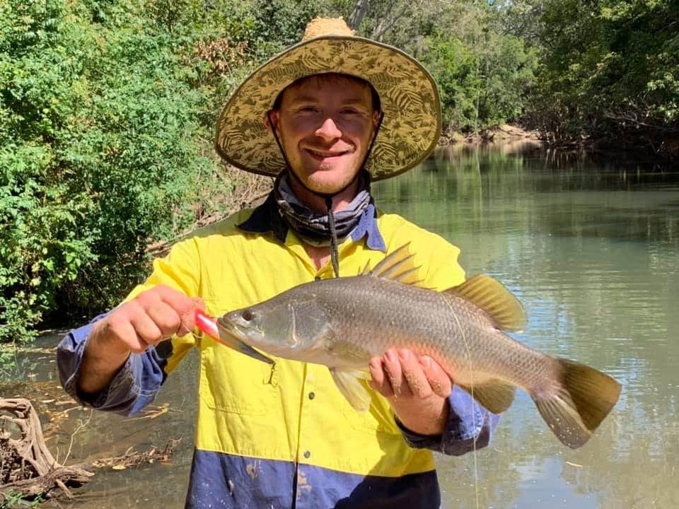

Cooktown Trip
First day
Greg and I went up to Cooktown for a couple of days fishing. We fished the close shiprecks at the front of Cooktown, Cokktown inlet and the Lakefield National Park river systems.
We used a combination of lures and livebait. The best catch of the day was the Spanish Mackeral I caught in the morning using livebait. We also cauhgt other species like sharkie markeral, reef sharks and cod. Below is me with the Spanish Makeral.

Second day
The second day we drove two hours from our motel to a spot on the Lakefield national Park riversystem, then walked another 30mins before casting our lures. The day resulted in lots of barramundi and a few other species. During our hike up the river we saw an abundance of wild life, including freshwater crocodiles, wild pigs, kingfishers and frogmouth owls.
